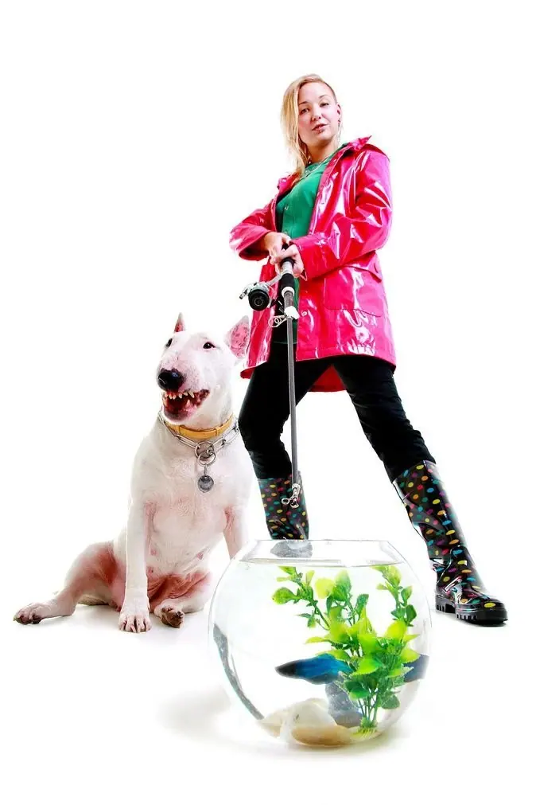
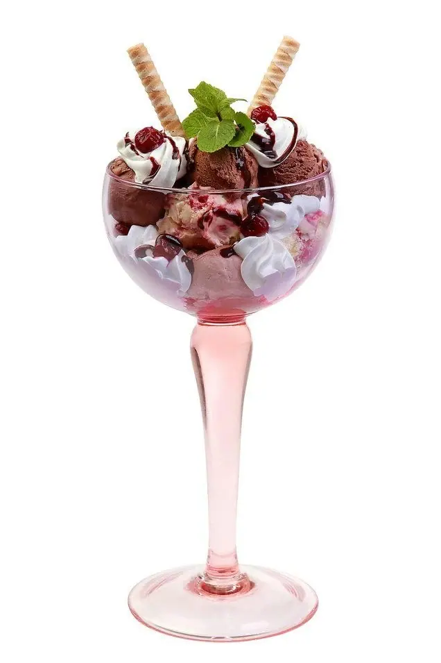
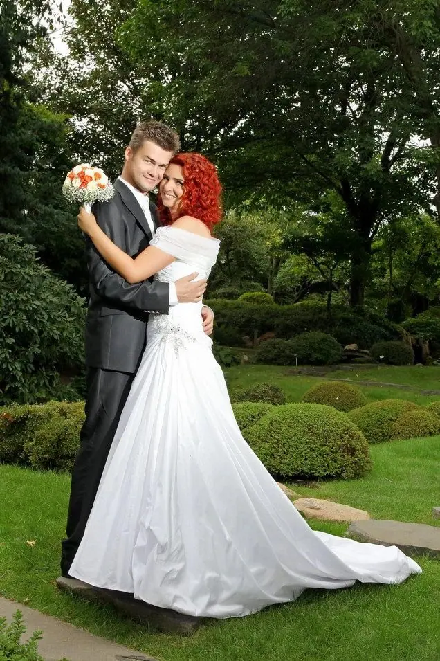
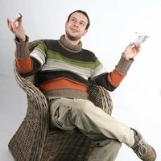

01 / 04
Reklamní fotografie
Reklamní fotky podle vašich představ a kreativních návrhů, nebo podle mých nápadů na míru vašemu zadání. Fotím pro web, sociální sítě i kampaně, od 2 500 Kč.
Zeptat se na termín→




Fotograf s ateliérem v centru Prahy
Zeptat se na termín →(01) Ahoj
Jmenuji se Ondřej Dobiáš a jsem fotograf z Prahy s vlastním ateliérem. Fotím reklamu , jídlo i portréty a profesionálně se fotografii věnuji od roku 1998. Domluvíme se rychle a jemnou retuš máte v ceně.
(02) Co fotím
01 / 04
Reklamní fotky podle vašich představ a kreativních návrhů, nebo podle mých nápadů na míru vašemu zadání. Fotím pro web, sociální sítě i kampaně, od 2 500 Kč.
Zeptat se na termín→02 / 04
Fotky jídla pro reklamu, web i katalogy, včetně food stylingu. Studio je mobilní, takže klidně přijedu fotit k vám do restaurace, cukrárny nebo výrobny.
Zeptat se na termín→03 / 04
Portréty pro LinkedIn, životopis, firemní web i osobní značku. Retuš a grafické úpravy jsou v ceně a na přání zajistím stylistu nebo vizážistku. Od 1 500 Kč.
Zeptat se na termín→Dále nabízím
Booky, setkarty a prezentace pro modelky a modely v exteriéru, interiéru nebo v ateliéru. Na začátek doporučuji fototest, ještě než se pustíte do drahého booku. Od 4 000 Kč.
↗(04) Postup
Od první zprávy po hotovou galerii.
Krok 1 z 4
Řeknete mi, co potřebujete: reklamu, jídlo, portrét, modeling nebo něco jiného. Pokud si nejste jistí, poradím vám.
Krok 2 z 4
Napíšete nebo zavoláte a domluvíme termín, místo a všechny podrobnosti. Na přání zajistím stylistu nebo vizážistku.
Krok 3 z 4
Fotíme v mém ateliéru v centru Prahy, v exteriéru, nebo u vás s mobilním studiem. Postarám se o světlo, scénu i kompozici.
Krok 4 z 4
Vybrané fotky zpracuji a pošlu vám je hotové. Jemná retuš je v ceně.
Dobrá fotka nevysvětluje, prodává pocit

(05) Za objektivem
Fotím v Praze, kde mám ateliér a zázemí o velikosti 120 a 80 metrů čtverečních. Mám ale i mobilní studio, takže když je potřeba, přijedu k vám a fotím po celé republice. Postavím světla, připravím scénu a váš tým se mezitím může věnovat své práci.
Většinou dělám reklamní fotografie, focení jídla a portréty. Podle mě dobrá reklamní fotka nic nevysvětluje, ale prodává pocit. U jídla mi jde o to, aby na něj člověk dostal chuť, a u portrétu o to, abyste na fotce byli opravdu vy. Nově nabízím i portrét s AI pozadím: vyfotím vás doopravdy a pozadí pak upravíme podle toho, kde fotku použijete.
Kromě toho fotím modeling, glamour, akty, reportáže, svatby, rodiny, děti i zvířata. Vedu také individuální fotografické kurzy. A když zrovna nefotím, jsem kapitánem na jachtě.

Ondřej
Ondřej Dobiáš · Reklamní a portrétní fotograf
Reklamní foto začíná na 2 500 Kč, portrét na 1 500 Kč a modeling na 4 000 Kč. U jídla stojí produktová fotka 300 Kč za kus, katalogová 800 Kč a imagové focení 2 500 Kč. Ceny jsou orientační, přesnou cenu vám řeknu podle zadání.
Ano. Moje studio je mobilní, takže přijedu do restaurace, kuchyně, cukrárny nebo výrobny a fotím po celé republice.
Ano, jemná retuš i grafické úpravy fotek jsou v ceně focení.
Ano, není problém. U focení jídla spolupracuji s food stylisty a šéfkuchaři.
(07) Kontakt
Napište pár vět o tom, co si představujete, a termín, který se vám hodí.